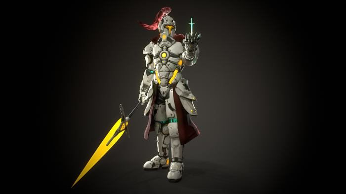
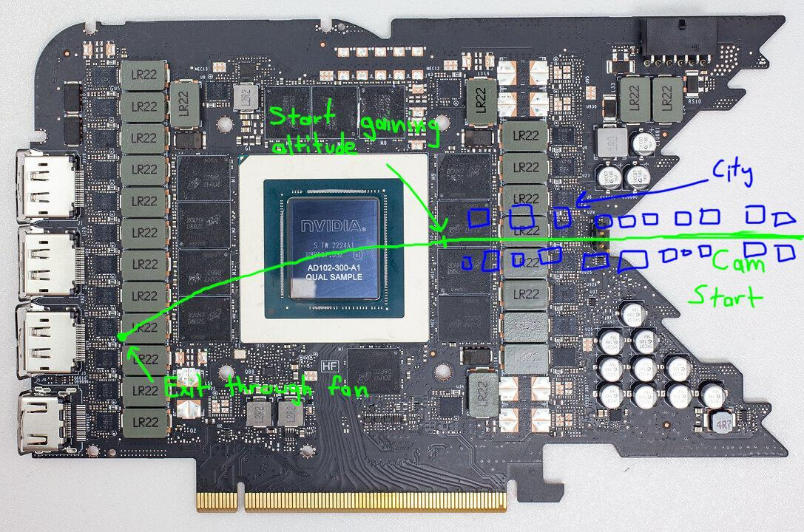

Reality Check + Prepping for Pitch
Since everyone on the team has being doing most of their research on the graphics card concept, I think it's safe to say that the mobile phone idea has been ditched.
During the first half of class we introduced ourselves to the mentors from Harbor Picture Company.
Kyle Cody - Creative Director
Dongyoon Billy Jang - 3D Lead
Molly Intersimone - Compositor
Justin Kurtz - Visual Effects Supervisor, 3D
Olivia Burke - Talent Operations Director
After we met with the mentors, we had a meeting with Prof. Fowler and Prof. Murphy to make sure our idea was feasible within the allotted time frame and production capabilities.
Team Nvidia's meeting went pretty well. We were toying with the idea of dropping the gamer in our first shot into the video game world through the portal. The professors advised against this because SCAD doesn't have the rigging needed to preform a safe drop. If the effect was done in 2D, I'd look very cheesy. If it was done in 3D, we'd need to create or use a photoreal human which is very difficult.
While in class, we decided that we'd use a character with no skin visible. Luckily, Josephine's friend Gabriel Buckner is willing to let us use a model of his that fit's the parameters.
Gabe also provided us with a couple of details about the model. He is currently in the process of retopologizing the model so it is more performant in DCC's. The model is also not rigged at the moment. If we can't rig the model, we'll be reaching out to members of SCAD's rigging union for help.
In addition to Gabe, we also recruited Ben Lebermann as our sound designer for the project. I later found out that I had worked on the same project as Ben after he sent over a picture for future review presentations.
Prior to class I had also reached out to Brendan Hirsch, a great director of photography and colorist. Due to a reduction in shots and our shot production schedule, we elected to shoot our plate ourselves.
After recruiting Gabe and Ben, we refocused on creating the pitch. Based on feedback from the professors, Austin created previz for our advert. Labeled as "V2 Pre-Viz" on his site.
After that previz was created, we critiqued it and a couple of new ideas came up. One of those being the inclusion of the slit scan effect from 2001: A Space Odyssey as we exit through the grills on the back of the GPU. I also drew a camera path on a image of the RTX 4090's pcb that I found online.
Prior to next class we'll compile our presentation and references to create a pitch video that'll be viewed in class on Tuesday.
{kind=link}